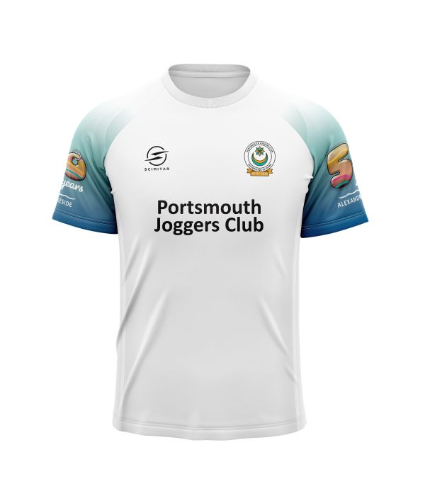

Celebrating 50 Years of Running Together
As you may already know, 2026 is an extra special year for Portsmouth Joggers: it's our 50th birthday!
Fifty years of running around Pompey is quite the achievement, and we intend to celebrate in style. There will be monthly events throughout the year, including a birthday party in September, starting with the Burn’s Night Park Run on January 22nd. Details of other events are at the end of this page.
We also want to make sure you are fully kitted up for the year ahead with a bespoke PJC 50th Birthday t-shirt! The technical t-shirts will be manufactured by Scimitar, in the same material as our regular club t-shirts. They look great as you can see from the pictures below.

Front
 Back
Back
The t-shirts will be the same fit and follow the same sizing as our normal club t-shirts. If you are unsure what size is for you, please take a look at the size guide to help you determine what will fit best.
The club is keen for you all to be able to get yourself a t-shirt if you want one, so we will be subsidising the cost. That means that you get your hands on a bespoke t-shirt for just £10! We hope this makes them accessible to all, but if you do need support with the cost please speak with our welfare officer Sue Clarke and she will make sure you are not left out.
So how do you get your hands on one (or two, or three…)? Simply fill out the order form which has been sent to all members via email. If you can't find the email please speak to the club secretary and it will be re-sent to you.
T-shirts will take 6-8 weeks to be produced, from the time of ordering. So you can expect to get your hands on your t-shirt in March. Note that we will not be accepting orders after the 30th Jan, as the order will have already been placed with Scimitar. So don’t delay, get your t-shirts ordered today!
PJC members are busy making plans for events in almost every month of 2026 as you can see in the flyer.